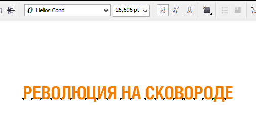

Как создать текст по окружности с перспективой?
Sinto / 13.08.2013, 14:14
Форум:
Добрый день, поделитесь опытом, пожалуйста - возможно ли создать текст, расположенного по дуге так, чтобы он был еще и в перспективе? То есть начало фразы - большие буквы, потом - к концу плавно на уменьшение. Большое спасибо!
Тағам дайындаудағы жаңалық - верхняя строчка,
Революция на сковороде - нижняя. ))
строчки сразу одна под другой идут
ох дугу надо пологую делать иначе надпись финдибобером идет ...
Так не проще?

Санчо, пожалуй, для корела, это будет самое правильное решение! Спасибо огромное!
Страницы